Download the installer of your choice. Note: this tutorial covers the Inkscape .exe installer.
The Inkscape .msi installer has a couple of dialog boxes different from the .exe version. If you use
the .msi installer, accept all default settings. A download dialog box might appear asking you whether
you want to save the installation file or cancel out of downloading. Click on Save File.
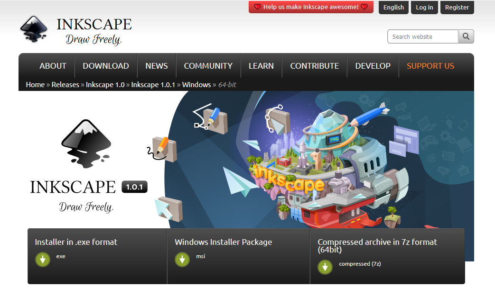
Choose Inkscape Installer.
You are brought to the Download Inkscape page. A dialog box appears prompting
you to download the Inkscape installation program.
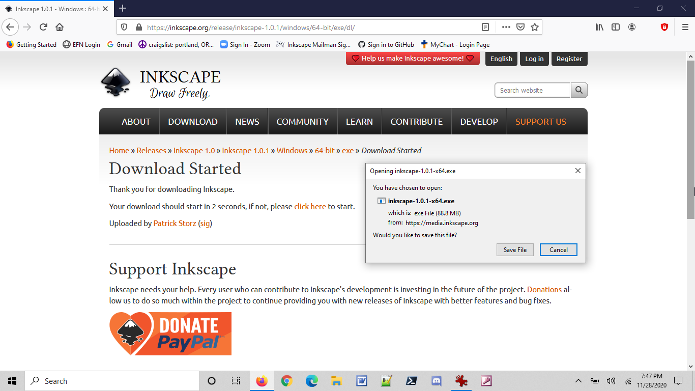
Download Inkscape dialog box.
If you download it onto your desktop, you will see an icon similar to the one below:
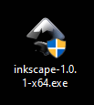
Inkscape Installer Icon
Double-click on the installer icon. If you are using Windows 10,
a dialog box will appear inquiring whether you want to install Inkscape.
Click on Yes.
Another dialog box appears inquiring which language you want to use
for installing Inkscape. Select your language of choice:
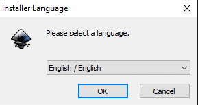
Installer Language dialog box.
The installation wizard appears:
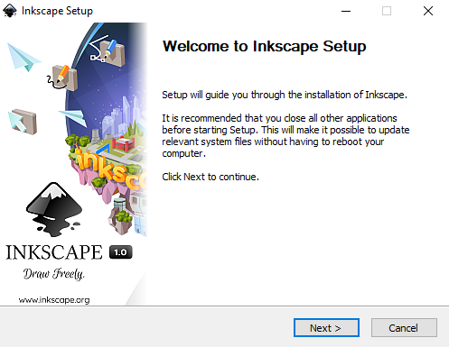
Installation wizard
The installer quickly checks whether there is enough room on the hard disk to install
Inkscape. If there isn't, the installer will give you a diagnostic statement. If
there is enough room to fit the Inkscape program on, then the installation begins in earnest.
Click on the Next button. The End User Legal Agreement (EULA) window comes up.
Read the agreement. Click on I Agree.
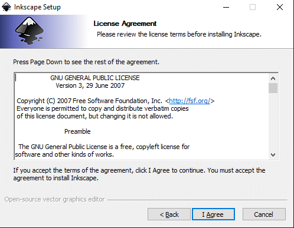
End User Legal Agreement (EULA) window
The Choose Components window comes up. If you are just starting out,
keep the default settings by clicking on Next.
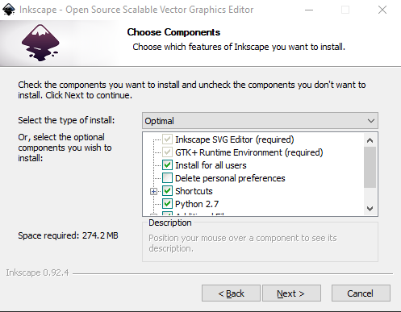
Choose Components (default settings are chosen)
The Choose Install Location dialog box appears. Accept the default
location by clicking on Install.
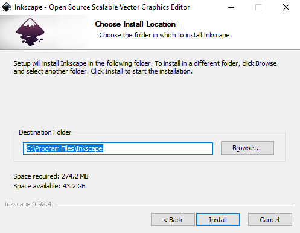
Choose Install Location dialog box.
Once you’ve clicked on the Install button. The installation process
begins:
Click on Finish. Congratulations! You have just installed Inkscape
onto your computer. If the Run Inkscape checkbox is checked, Inkscape
will launch. Otherwise, you will see the Inkscape icon on your desktop.
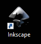
Desktop Inkscape icon
You can double-click on it to start Inkscape. Enjoy the creative power of
graphic design at your fingertips!
Setting Up Autosave
Now that Inkscape is installed, you should activate the Autosave
so that your artwork is saved automatically behind the scenes on a regular
basis. Power outages, hardware and software problems, and other miscellaneous,
yet serious accidents can and do happen, so it’s a wise thing to do to
minimize the damage.
Choose Edit > Preferences… The
Preferences dialog box appears.
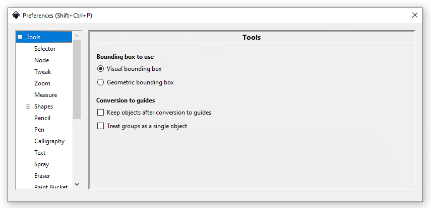
Preferences dialog box.
Scroll down the navigation list on the left side of the dialog box
until you reach Input/Output.
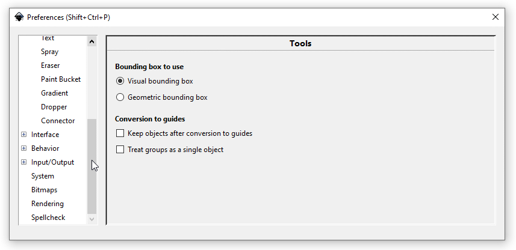
Scrolling down to Input/Output.
Click on the Expand icon () to see the Input/Output sublisting.
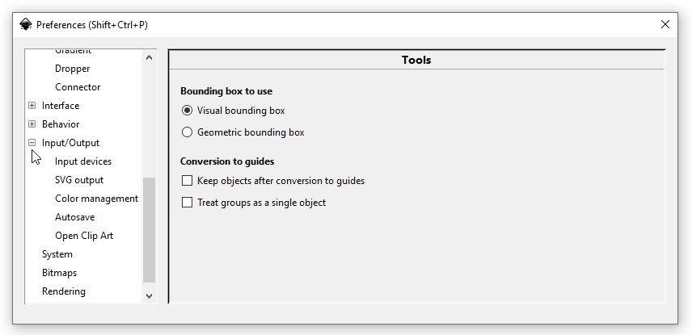
Expand the Input/Output sublisting.
Click on Autosave.
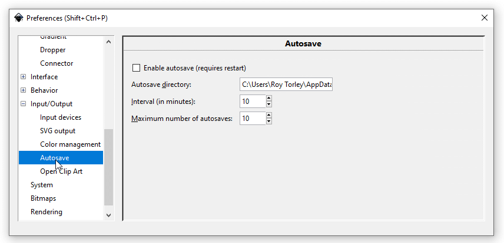
Click on Autosave.
In the Autosave dialog box, you can choose where temporary
saved Inkscape files can be stored. When in doubt, keep the default
subdirectory. A ten-minute save interval and a maximum of ten autosaved
files are good default values to keep. You can change them to fit your
needs and level of comfort.
Check the Enable autosave (requires restart) checkbox to
“turn the Autosave switch on.” It has not been activated
yet.
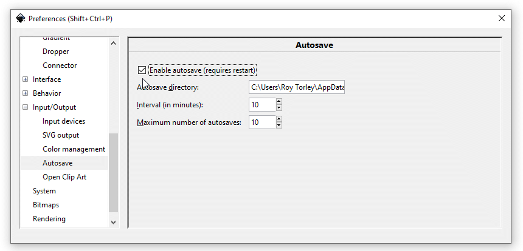
Click on the Autosave checkbox to enable the
function.
If you already created some artwork that you want to save, then choose
File > Save, follow the instructions in the dialog box,
then File > Quit to exit Inkscape.
Restart Inkscape. The Autosave function is now active and
will stay active in future sessions. It will create backup copies of your
work every ten minutes. You can now work on your artwork with peace of
mind.